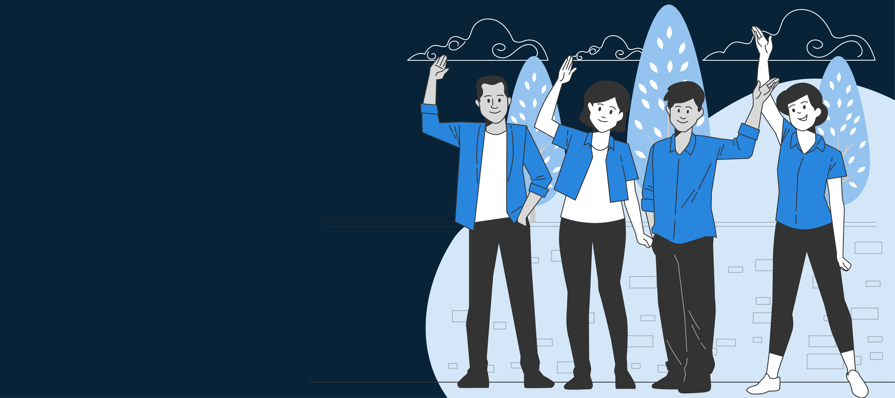

فِي الْبَدْءِ كَانَ الْكَلِمَةُ، وَالْكَلِمَةُ كَانَ عِنْدَ اللهِ، وَكَانَ الْكَلِمَةُ اللهَ. هذَا كَانَ فِي الْبَدْءِ عِنْدَ اللهِ. كُلُّ شَيْءٍ بِهِ كَانَ، وَبِغَيْرِهِ لَمْ يَكُنْ شَيْءٌ مِمَّا كَانَ. فِيهِ كَانَتِ الْحَيَاةُ، وَالْحَيَاةُ كَانَتْ نُورَ النَّاسِ، وَالنُّورُ يُضِيءُ فِي الظُّلْمَةِ، وَالظُّلْمَةُ لَمْ تُدْرِكْهُ. كَانَ إِنْسَانٌ مُرْسَلٌ مِنَ اللهِ اسْمُهُ يُوحَنَّا. هذَا جَاءَ لِلشَّهَادَةِ لِيَشْهَدَ لِلنُّورِ، لِكَيْ يُؤْمِنَ الْكُلُّ بِوَاسِطَتِهِ. لَمْ يَكُنْ هُوَ النُّورَ، بَلْ لِيَشْهَدَ لِلنُّورِ. كَانَ النُّورُ الْحَقِيقِيُّ الَّذِي يُنِيرُ كُلَّ إِنْسَانٍ آتِيًا إِلَى الْعَالَمِ. كَانَ فِي الْعَالَمِ، وَكُوِّنَ الْعَالَمُ بِهِ، وَلَمْ يَعْرِفْهُ الْعَالَمُ. إِلَى خَاصَّتِهِ جَاءَ، وَخَاصَّتُهُ لَمْ تَقْبَلْهُ.

دير الأمير تادرس الشطبي والقوي القديس الأنبا موسي بسرابيوم
يرحب بكم ..